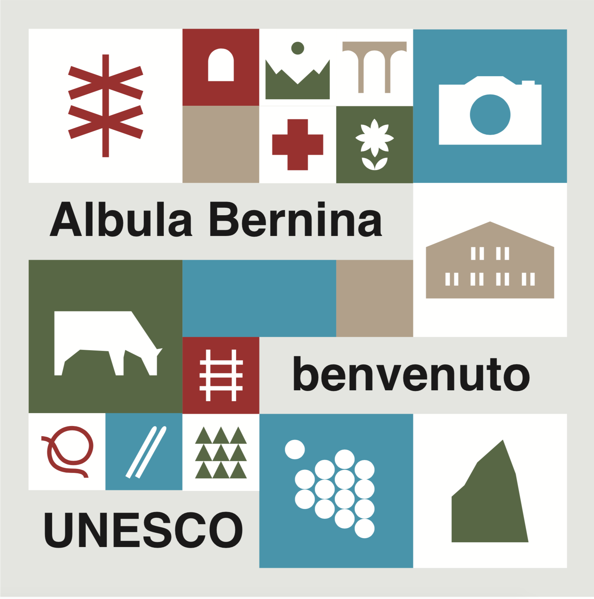
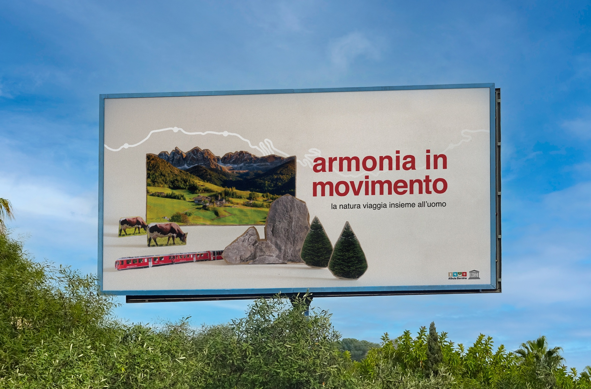
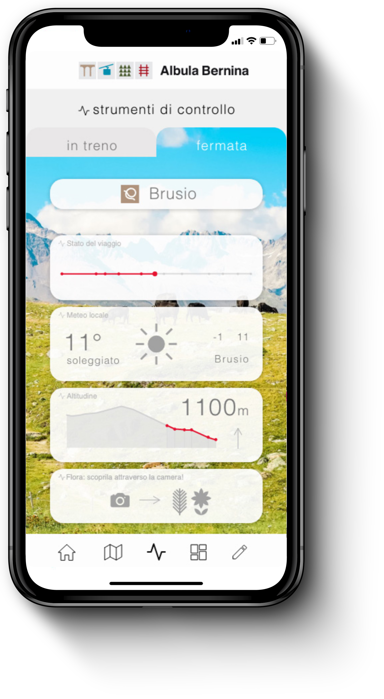
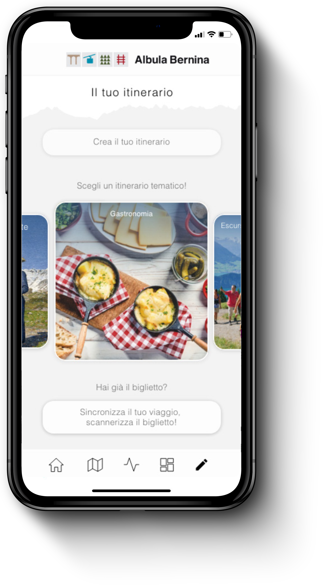
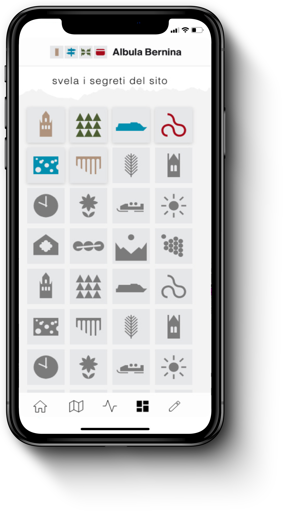

→ BRAND IDENTITY


The UNESCO site's elements inspired a series of 60 pictograms categorized into four themes, each defined by a specific identity color: red for the elements of the railway, green for nature, beige for architecture and blue for activities. These pictograms form geometric patterns used to brand various artifacts, merchandise, and tickets.
→ POSTER CAMPAIGN



The poster campaign is divided into two distinct series: a formal institutional collection and a playful non-institutional campaign. The institutional series promotes the UNESCO site by highlighting the harmony between man and nature, showcasing the railway as an artificial element that seamlessly integrates into the landscape without altering it. In contrast, the more lively campaign adopts a playful tone to invite tourists of all ages to visit, focusing on the train's renowned slowness as a unique opportunity to fully immerse oneself in the beauty of the surrounding panorama.
→ MOBILE APP



The travel experience is further enhanced by a mobile application designed to assist with both trip planning and the exploration of the territories along the route. In addition to the "Discover the Site's Secrets" and "Plan Your Journey" interfaces, the Albula-Bernina app features a "Control Tools" screen, providing real-time information to users during the train ride or while waiting at the station.